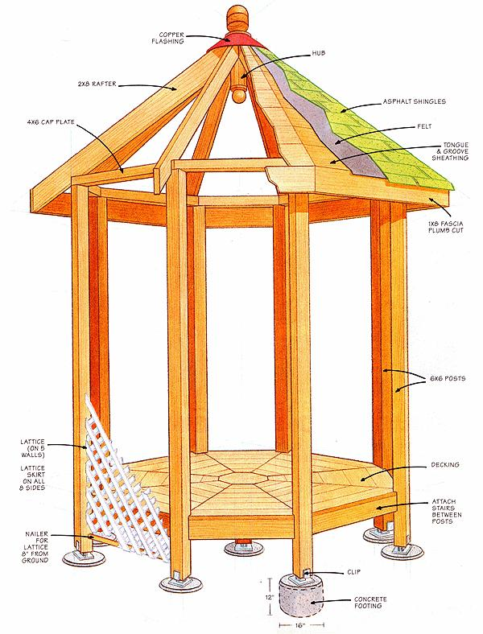
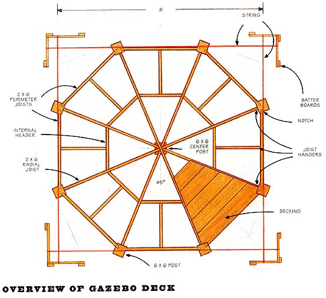
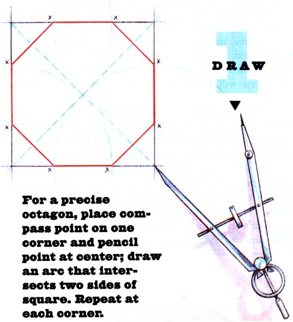
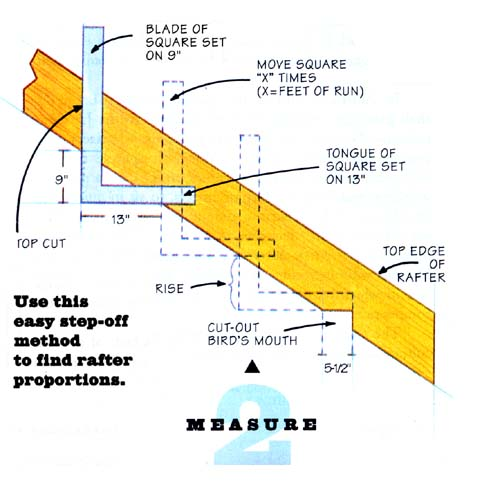
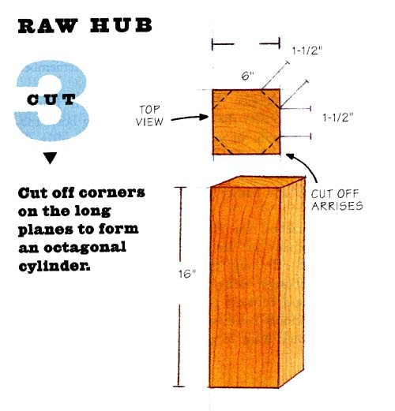
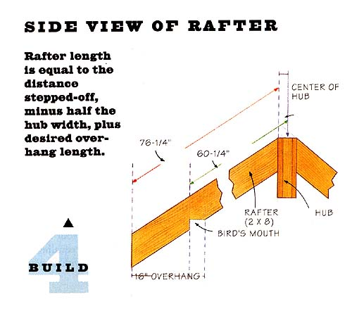
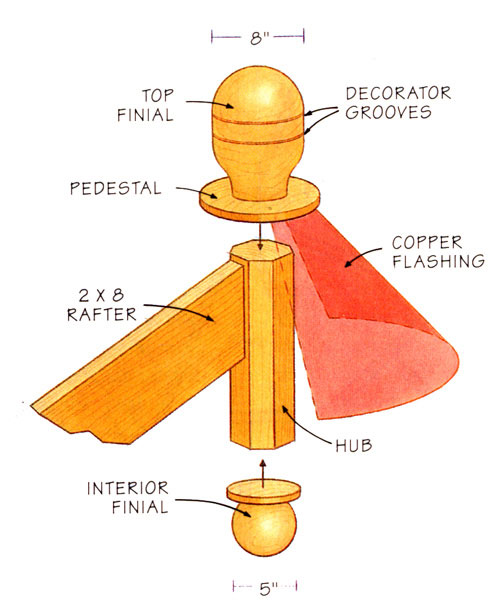
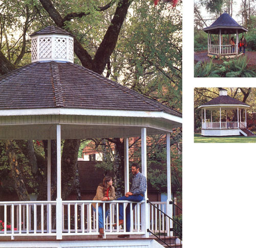

THE OCCIDENTAL GAZEBO
In the Orient, it is described as the "suchness of the now." In Western culture, it is a sanctuary. And you can build one right in your own backyard.
IN THE WARM, PLEASANT DAYS OF EARLY summer; you stare wistfully at an empty space in your backyard. Obviously, it would be better if your neighbor were staring wistfully at that spot instead. It would mean less work. But you envision a classic gazebo there. It would be so easy to build, you think.
In American culture, the gazebo (corrupt Latin: "I shall gaze") is a strange Western analogue to the Japanese teahouse: Not indoors, nor quite outdoors, it attracts cool breezes and serenity of spirit. When the purple twilight falls softly and the hard news comes on TV, it's a place to withdraw and listen to chirping insects, to sit in quiet contemplation of the present, a time zone people in the Orient describe as the "suchness of the now." This moment is unique and fleeting, never to come again. Surely a calm like this will never come from gazing into a colored-image box in which telephone and cola companies besmirch the competition.
The errant television is the source, in fact, of a weird cultural concept that all things should be a snap: even such things as building a gazebo. Please reconsider. Perhaps after you've built 10 or so-no, it still won't be easy. So sorry. It isn't a project you can complete in a weekend or without the help of other strong backs and psyches.
For reasons too complicated to fully understand, the classic gazebo is octagonal. Whether your carpentry skills are nominal, moderate or accomplished, this entails making friends with a shape that looks simple but contains complex geometry. The very shape cries, STOP! But take heart; its secrets will be revealed to you through the diagrams herein.
And the pleasure of workmanship done by your own hand, combined with the gazebo's inherent beauty, makes building one all the more worthwhile, difficulties notwithstanding. Challenging, yes. Insurmountable, no.
Actually, you can build a gazebo with something approaching ease, but only if you do so with forethought worthy of a chess master. Mistakes result from too much hurry. Disasters spring from too many mistakes. A moment's inattention, and the next day you will sputter undreamt-of expletives. You must work slowly; steady progress is better than slapdash completion. Each task should be rehearsed in your mind before you pick up a tool-a useful discipline in almost any pursuit.
What follows is meant to provide inspiration and general guidelines for the construction of an 8-foot gazebo. Like life itself, your proposed gazebo is truly a festival of choices: Infinite variables abound. Your gazebo can be any size you wish, and the roof any pitch or configuration: steeper, flatter, with a curving upswept arc, double-pitched like a witch's hat, with split shakes or even a latticed roof. More detailed, step-by-step plans are commercially available for all these designs and more.
BEFORE YOU BEGIN, prepare the hub-the center member against which the tops of the rafters will rest. Obtain a 6 x 6, 16" long, and cut off the corners on the long planes to form an octagonal cylinder.(Carpenters call these planar corners arrises, from the French word for the beard on grain.
If you use a longer piece, you can lathe the top and bottom finial (ornamental) balls as integral parts of the hub, a method that is common but expensive and unnecessary; it's better to leave the ends flat (you can easily fasten on premade finials after construction, for far less money.
The first phase of erection is critical, in that mistakes can literally be set in concrete. Basically, the goal is this: There are eight posts that go up in the sky, spaced equidistantly. They must all face toward the center-that is, their flat sides will not be parallel to each other. The posts must all be the same height: Use a transit to level the bottom post clips on which they sit, and carefully cut each post to the same length (to feet, in this example.
The header joists along the perimeter will notch into each post; or you can use expensive specialty hangers and thus avoid much chiseling.
Located in the exact center of the octagon is the support post for the radial floor joists, which meet there like spokes of a wheel.
To begin: Set up batter boards well outside the perimeter and run strings; they should form an 8-foot center square, with your octagon hiding inside. Measure the diagonal distances of this; they must be equal, or else. Measure and make minute adjustments to the string by moving it along the batter board. Mark the corners of the square with stakes, then connect the far corners with two strings laid diagonally so they cross at the square's center. Mark the center with another stake.
On the perimeter of the square, use eight brightly colored ribbons (two per side), tied loosely to slide along the string, to mark the points of the octagon.
The points can be found as follows: Attach a cable or nonstretchable string to one corner stake; then measure off the exact length to the center stake.Swing the length of cable to either side and mark where it hits the square's perimeter-these represent two points of your octagon. Repeat the process at each corner, then measure to be sure the respective dimensions and angles are constant. Afterwards, mark the octagon points with stakes as well.
Dig nine holes, 16" across and a foot deep, at the points of the octagon and at its center; you'll need 12 cubic feet of concrete, or about 15 bags. Fill each hole, fall to your knees, and place each post clip in the wet concrete one at a time, using the stringline once more to position and orient them and a transit to be sure they're all the same height. This sounds difficult; in reality, it's only time-consuming. But you won't need the stringline at all after this.
Allow one night to cure both the concrete and you. The next day, plumb and brace each post, using at least two long (14-foot 2 x 4s angled outward and joined to the top of the post with form nails. Then affix the post to the clip with lag bolts.
Next, use your transit to find the height of the bottom perimeter joists, which should be about a foot above the bottoms of the posts. Cut a V-notch on the insides of each post and nail on the encircling joists. The center post, which can also be clipped to its concrete base, should be the same height as the bottom edge of the perimeter joists.
Now nail joist hangers (made of 1/16 " steel) over the center lines of the V-notches, where the perimeter joists meet (bending the flanges). Next, place the eight radial joists; they converge over the center deck support post and rest level upon it. They can have flat ends-forming a small octagon where they meet-or you can cut a 22- 1 / 2 ° angle on both sides of each center end, so they meet snugly. Cut and install the internal headers and the jack joists.
At this point, the hard work is halfway done. Now lay the decking of the gazebo, using 2 x 6 boards and cut ing carefully around the posts. Treated wood works well here (check with your dealer for toxicity); so does redwood, although the concept of logging redwood trees oozes bad karma. If you use clear fir, paint or seal all sides. You can make the center octagonal piece from wide stock, such as a 2 x 12.
Top the posts with 4 x 6 boards (fir is fine) for cap plates, attaching them with counterbored (flush) lag bolts into the end grain of the post, and perhaps using a friend or two to help you place them. Where the cap plates meet, cover them with steel plates (3/16" thick) to strengthen the joints. After this, you can remove a few of the more inconvenient temporary post bracers. Leave the majority intact, however.
>> It's best to leave the hub ends flat; you can easily fasten on premeds top and bottom finial (ornamental) balls after construction.
For the next sequence, tent a 12-foot aluminum scaffold walls, the wide kind with a no-slip surface, and set it across the top of the structure. (A wooden plank is too narrow and bends too much - and don't even think about using your aluminum extension ladder as a plank, unless you're curious about the dressing and debridement of compound fractures. It's 10 feet down if you fall.)
Cut all eight rafters, after first measuring the distance from the outside of one post to the outside of the post opposite it in the octagon. The run of each rafter will be half this distance. In the example shown, the roofs pitch is 9:12. Here, however, the octagon has a surprise for you, called "the rule of 13."For each foot of run of a common rafter from top plate to ridge, an octagon rafter has i3". Move the gauges on your flaming square to 13 on the tongue and 9 on the blade, the reverse of the usual rise-on-tongue/run-on-blade method.
I am not making this up; this is correct procedure for all arcane polygons with eight sides. It makes you want to sit down and have a beer or two. Instead, use your framing square to step off the rafters "X" times (X equaling the number of feet in the run), and cut them with a power saw. Finish the bird's-mouth cut (where the rafter rests on the cap plate) with a handsaw. Remember to add on an overhang, 16" here, and to subtract half the thickness of your ridge boardin this case, the 6 x 6 hub.
Nail two opposing rafters to the center hub, to form a simple truss. Using two or more friends, lift the truss to the top of the gazebo and hoist it into vertical position with ropes, grunts and sweat; stand on the walkway, while one pair holds the truss in place and friend #3 keeps it plumb by watching the bubble of a level, and leisurely toenail the rafter ends to the cap plates.
By now, your spouse will have gone to suddenly remembered appointments. So have friend #3 jump down to hand you up the remaining rafters, one at a time as you need them. As soon as he gives you the third rafter, change your mind and have him climb back up to hold the truss exactly plumb while you nail the third rafter at apex and bird'smouth, to form a tripod. Until this is done, a light zephyr could de-plumb it, ruining your day and many to come. The rope-holding friends below may now watch you work, while they relax.
Not you or friend #3. You both have to reposition the plank after installing each opposing pair of rafters.
Nail the fascia board (1 x 10cedar is excellent) onto the exposed rafter ends. At this point, the hard work is mostly done. But the scary work lies ahead, for you will have to climb on the roof soon, and a prayer or two might be in order. Next, measure and cut 3/4" fir T & G (tongue-and-groove) sheathing and nail it to the rafters (simple words, but six hours); staple on the felt; and roof it with asphalt shingles using short roofing nails no longer than 1/2". The underside is completely visible, remember? You don't want them poking through.
Install the copper flashing (special-ordered from a sheet-metal shop) over the topmost point, using butyl rubber or asphalt caulk in your caulking gun, and affix the finial ball by driving galvanized finish nails through the pedestal into the hub stub. Finis. Time for a tall cool one. It doesn't get any harder than this, from this point forward. Really.
With gazebos, the finish work is more critical to appearance than to structural soundness. Still, you shouldn't put off doing the stairway and rail, mounting wooden, righ-tangle rafter brackets where posts and cap plates meet and between posts and overhangs. Later, you can install optional bench seats and lattice to enclose it on five sides. You'll want to paint or stain all bare wood to protect against the elements, of course. Very wise of you.
Friends #1, #2 and #3, who helped you earlier, have probably read The Adventures of Tom Sawyer. Your spouse has by now entered night school. Anyway, it's best to work alone, gathering the inner harmony intrinsic to a gazebo. Over the course of the long hours it will take, working on these finishing touches imparts a spiritual calmness which the Japanese call wa, or shibumi. The effect on your personal character cannot be overstated. At a certain point, ever far-off, you'll be nearly done. Your body and spirit will feel somewhat wasted, but your face will have an inscrutable, masklike expression reflecting inner peace. You will have found wa, or shibumi. Doo-wop.
Some quiet evening, when your neighbor sees you sitting there inside your nearly completed gazebo, he will probably come over to sit with you in the gloaming and give you a pain in the arris by asking questions. Answer only with a beatific silence. The moment will pass, and never come again. Ask him, casually, if he's read much Twain. Serve him a cup of fragrant green tea, or pass him your flask of Wild Turkey. Look far away and inward, and somberly recite:
At dusk, truth he told, Outdoors is better than in; The crickets, you know.
Jeff Taylor lives in the coastal mountains near Blodgett, Oregon, with his wife, joy, and their daughter, Serenity. He spent 21 years as a carpenter before becoming a writer.
Popular again an a property improvement, gazebos are sprouting up all over, including these built by author Taylor.
|
 Popular again as a property improvements, gazebos are sprouting up all over, including these built by author Taylor. |
 |
 |
|
 |
 |
 |
|
 |
 |
|